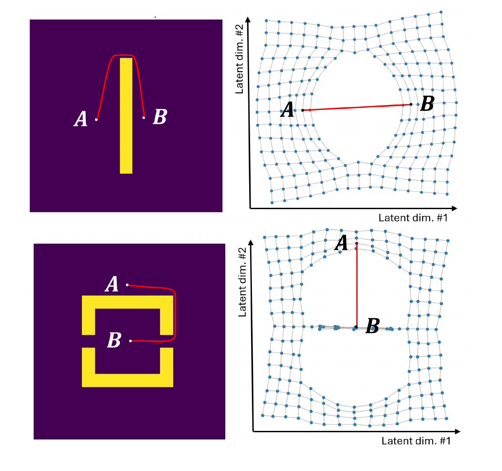
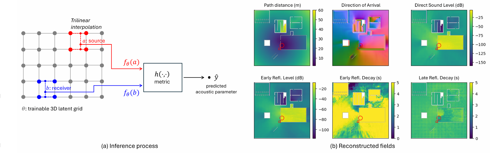

Reciprocal Latent Fields 論文報告
RLF｜互易潛在場
預先計算聲音傳播的資料壓縮
論文：Seuté、Vasudev、Richan、Buffoni（Ubisoft La Forge、Audiokinetic），SIGGRAPH 2026
[1]
這篇論文處理遊戲裡「聲音怎麼繞過牆、在房間裡迴盪」的問題。作者來自 Ubisoft，以及開發 Wwise 音效引擎的 Audiokinetic。論文全名有點長，後面簡稱 RLF。
研究主題
真實的遊戲聲音
聲音會被牆擋住、繞過牆角、在房間裡迴盪，玩家靠這些判斷自己在哪
→
資料太大
現有方法 wave coding 要先把聲音算好存起來，一張地圖就要 182 GB
[1]
→
RLF 的做法
同一張地圖只要 14 MB，聽測時和原始模擬分不出差別
[1]
RLF 讓遊戲用很少的記憶體，就能播出照物理算出來的回音和遮擋效果
先講整份報告的主線。遊戲想要真實的聲音，業界有一種很準的方法叫 wave coding，問題是資料量太大。這篇論文提出 RLF，把資料縮小一萬多倍，聽起來卻一樣。後面所有內容都是在解釋這三格。
報告架構
順序照「先懂名詞 → 再看問題 → 再看解法」排，每一段都用到前一段的內容
第 3 段是 DSP，第 4 段是這篇論文的新東西，兩者分開講
這份報告有五段。第一段的三個名詞會一路用到最後，所以先講。第二段說舊方法卡在哪。第三段是 DSP，負責把聲音和數字互相轉換。第四段才是論文真正的貢獻：怎麼把這些數字存得很小。最後看結果和意義。
聲音的傳播路徑
音源 a
聽者 b
① 直達（被牆擋）
② 反射
③ 繞射
牆
直達聲：走直線最先到，被牆擋住就變小聲
反射：撞到牆或天花板再彈過來，晚一點到；很多次反射疊在一起就是殘響
繞射：聲音波長長（100 Hz 約 3.4 m），會彎過牆角，躲在牆後還聽得到
遊戲要算出每條路帶來多少聲音、多晚到、從哪個方向來
光的波長很短，被牆擋住就看不到；聲音的波長從幾公分到十幾公尺，會繞過障礙物。所以只用射線直線追蹤，算不出繞射。這也是後面要用「波動模擬」的原因。
脈衝響應
① 直達聲 ② 早期反射 ③ 晚期殘響（越來越小）
時間 → 0
在 a 拍一下手，b 錄到的整段聲音，叫脈衝響應（Impulse Response，IR）
可以把它想成這條路徑的聲音指紋：換個位置，指紋就不同
有了 IR，任何音效在這個位置聽起來的樣子都算得出來
紅色是直達聲，綠色是早期反射，藍色是越來越小的晚期殘響
在大教堂拍手，會聽到「啪」之後一長串嗡嗡聲慢慢消失；在小房間拍手，回音很短。這段錄音就是 IR，它同時記錄了距離、遮擋和房間大小。左圖是示意圖，不是真實資料。
聲學參數
參數
意思
例子
路徑距離
聲音實際走了多遠，包含繞路
直線 8 m，繞過牆要走 10 m
音量（dB）
直達聲、早期反射各有多大聲；dB = decibel（分貝）
隔一道牆，直達聲變小
衰減時間
回音多久會消失，分早期和晚期
大廳比小房間久
到達方向
聲音從哪個方向進耳朵；英文 Direction of Arrival（DOA）
躲在牆後，聲音從牆角傳來
整段 IR 太大，遊戲只存從 IR 算出的這幾個數字 [1][2]
這四個數字就是後面一直講的「聲學參數」。wave coding 這個方法的做法，就是把每條 IR 壓成這幾個數字。例子欄的數字是我舉的例子，不是論文的資料。
Wave coding 的記憶體問題
即時模擬聲波太慢，業界改成開發時先算好、遊戲時查表 [1][2]
答案取決於音源在哪、聽者在哪，等於一張「每一點到每一點」的大表格
像城市距離表：城市多 10 倍，表格就大 100 倍
182 GB
Wave coding 在 WAL 地圖存一組參數的大小 [1]
WAL = Wwise Audio Lab，208 × 10 × 185 m 的示範遊戲地圖 [7]
wave coding 算得準，但地圖一大，表格就存不下
wave coding 的資料量跟「音源位置數 × 聽者位置數」成正比。比較小的測試地圖 Audio Gym 也要 3.1 GB。方法夠準，只是存不下，RLF 改的就是儲存這一段。
系統架構與 DSP 位置
開發時：出貨前在電腦上算一次 遊戲時：每一幀即時處理 輸入 地圖幾何 牆、地板、房間的形狀 物理模擬（不是 DSP） FDTD 模擬 解波動方程式，得到 每對位置的 IR p.12 DSP 擷取參數 IR → π、δ、L、τ 四個數字描述一條 IR p.13–15 機器學習 RLF 訓練 182 GB 學成 14 MB 每格只存 16 個數字 p.21–24 RLF 查詢參數 給音源 a、玩家 b 約 46 μs 查出四個數字 p.21 DSP 增益＋卷積 L 調音量（被牆擋） τ 套回音（房間大小） p.14、16 DSP VBAP δ 決定各喇叭音量 聽出聲音從哪來 p.17 輸出 玩家聽到 有遮擋、有回音、 有方向的聲音 14 MB 的網格隨遊戲一起出貨
開發時把聲音變成數字，遊戲時再把數字變回聲音，這兩段用 DSP；中間的儲存靠機器學習，RLF 改的只有這一段 [1]
這頁是整份報告的地圖，回答「DSP 用在哪裡」。上排是開發時，遊戲出貨前在電腦上算一次：先有地圖，用 FDTD 模擬聲波得到每對位置的 IR。FDTD 是解物理方程式，不算 DSP。IR 出來後，用 DSP 擷取成距離、方向、音量、回音長度四個數字，再交給 RLF 訓練，從 182 GB 壓成 14 MB。下排是遊戲時，每一幀都要做：給音源和玩家的位置，向 RLF 查出四個數字，再用 DSP 調音量、套回音、用 VBAP 擺方向，玩家就聽到有遮擋、有回音、有方向的聲音。每個方塊右上角是對應的頁碼。接下來照順序講：先講上排 DSP 怎麼算，再講下排怎麼播，再用一個實際例子走一遍玩家聽到音效的流程。
計算的起點：脈衝響應
① 直達聲 ② 早期反射 ③ 晚期殘響（越來越小）
時間 → 0
遊戲想知道 看 IR 的哪裡 得到 聲音走多遠 第一個聲音何時到 距離 π 從哪個方向來 旁邊幾格的 π 怎麼變 方向 δ 聽起來多大聲 前 15 ms 有多少能量 音量 L 回音多久消失 能量掉得多快 衰減時間 τ
接下來的例子 音源 a 在牆後，聽者 b 站在牆角附近，直線 8 m。一條 IR 從頭算到底（數字是示意）
四個參數都從同一條 IR 算出來；方向比較特別，是拿算好的距離再推一次
前面講過，IR 就是在 a 拍一下手、在 b 錄到的整段聲音。開發時用 FDTD 波動模擬，在電腦裡把每一對位置的 IR 都算出來：空間切成 0.137 m 的格子、時間每步約 0.23 ms，算 2 秒。接下來三頁照這張表的順序，一個問題一頁，每頁都講四件事：輸入是什麼、套什麼公式、得到什麼、遊戲裡拿來做什麼。例子全部用同一個場景，數字會一路接下去。
距離與方向的計算
輸入 IR 裡直達聲到達的時刻 \(t_{DS}\)
→
公式 \[ \pi=c\,(t_{DS}-t_0),\quad \delta=-\frac{\nabla_b\pi}{\lVert\nabla_b\pi\rVert} \]
→
→
\(\pi\) a 到 b 聲音實際走的路（m）\(c\) 聲速 343 m/s\(t_0\) a 發出聲音的時刻\(t_{DS}\) 直達聲（第一個到的聲音）到 b 的時刻\(\delta\) 聲音從哪個方向來（長度 1 的箭頭）\(\nabla_b\pi\) π 變大最快的方向（梯度）\(-\) 負號：反過來，指向 π 變小的那邊\(\lVert\nabla_b\pi\rVert\) 箭頭的長度；除掉它，只留方向
t（ms） t0 = 0 a 發聲 tDS = 29 直達聲 反射 Δt = 0.029 s × 343 m/s ≈ 10 m b 和左右兩格的 π（m） 9.86 10.00 10.14 b δ 往左 π 變小 → 聲音從左邊來
直達聲晚 0.029 s 到 → π = 343 × 0.029 ≈ 10 m，比直線多 2 m，多出來的是繞牆 [1]
b 左邊一格 π = 9.86 m，右邊一格 10.14 m → 往左走距離變短
δ 指向左邊 → 聲音從牆角那側傳來，VBAP 調大左喇叭 [1][4]
白話：看直達聲晚多久到，就知道走了多遠；比一比旁邊幾格哪邊比較近，就知道聲音從哪來
c 是聲速 343 m/s，t0 是發聲時間。距離乘出來是 10 m，比直線的 8 m 多，因為聲音要繞過牆。方向的公式看起來複雜，意思很簡單：∇π 是距離增加最快的方向，前面加負號就是距離減少最快的方向，也就是聲音來的方向；除以長度只是把它變成單位向量。電腦裡用左右兩格的差去算，跟山上找最陡的坡一樣。這一頁的數字是我編的示意。δ 在遊戲裡怎麼分給喇叭，卷積之後有一頁專門講 VBAP。
音量的計算
輸入 直達聲之後 15 ms 內的能量 \(e(t)\)
→
公式 \[ L_{DS}=10\log_{10}\!\int_{t_{DS}}^{t_{DS}+15\,\mathrm{ms}}\! e(t)\,dt \]
→
→
遊戲中 換成倍數 \(A=10^{L/20}\)，乘在音效上（增益）
\(L_{DS}\) 直達聲音量（dB）\(e(t)\) 時刻 t 的能量 = IR 振幅 h(t) 的平方\(t_{DS}\) 直達聲到達的時刻，從這裡開始加\(\textstyle\int\!\cdots dt\) 把這 15 ms 的能量全部加起來\(10\log_{10}\) 把能量換成 dB\(A\) 音效振幅要乘的倍數（振幅用 20，能量用 10）
15 ms 視窗 h(t) 振幅 e(t) = h² .16 .063 tDS +15 ms 加總 ≈ 0.25 → 10 log₁₀ → −6 dB 原本的音效 × A = 0.5 振幅剩一半，比較小聲
能量是振幅的平方；把這 15 ms 內每個取樣的能量加起來 = 0.25 [1]
取 log 換成 dB：\(L = 10\log_{10}0.25 \approx -6\) dB
遊戲播放時：\(A = 10^{-6/20} \approx 0.5\)，音效振幅乘 0.5，聽起來被牆擋小聲了 [1]
白話：把直達聲那一小段的能量加總，就知道多大聲；遊戲再把 dB 換回倍數，調整音效音量
dB 是用 log 表示大小，因為耳朵對音量的感覺本來就接近 log。能量用 10 log，振幅用 20 log，所以換回振幅時是除以 20。早期反射的音量算法一樣，只是時間窗換成直達聲之後的 100 ms。0.25 這個數字是示意。
衰減時間的計算
→
公式 \[ S(t)=\int_t^{\infty}\! h^2(u)\,du,\quad \tau=-\frac{60}{s} \]
→
→
\(h(u)\) IR 在時刻 u 的振幅，平方就是能量\(S(t)\) 從 t 到最後還剩多少能量\(u\) 加總用的時間，從 t 一路到 IR 結束\(s\) S 換成 dB 後的斜率（dB/s，是負數）\(60\) 掉 60 dB，能量只剩百萬分之一\(\tau\) 衰減時間（s）：回音多久消失
灰：這段能量 金線：往後累加 S 能量 4 S=8 能量 2 S=4 能量 1 S=2 能量 1 S=1 從尾巴 往前加 0 -3 -6 -9 S (dB) 0 75 150 225 ms 斜率 s = −3 dB / 75 ms = −40 dB/s 照這個速度，掉 60 dB 要 1.5 s
從最後一段往前加，得到 S [3]
每 75 ms 掉 3 dB → 斜率 s = −40 dB/s
τ = 60 / 40 = 1.5 s：回音要 1.5 秒才降 60 dB [1]
白話：從 IR 尾巴往前累加能量，量曲線掉多快，就知道回音多久消失
直接看 IR 的話，聲音忽大忽小，很難量斜率。Schroeder 1965 年的做法是從尾巴往前加，曲線就變得平滑、只會往下。斜率 s 的單位是每秒掉幾 dB，τ 就是掉 60 dB 要花幾秒。論文分早期、晚期兩段各量一次。得到的 τ 在遊戲裡決定三種房間回音怎麼混，下一頁看混好的回音怎麼套到音效上。表裡的數字是示意。
卷積的計算
→
公式 \[ y[n]=\sum_{k} x[k]\,h[n-k] \]
→
→
\(x[k]\) 音效的第 k 個取樣\(h[m]\) 房間 IR 的第 m 個取樣：晚 m 格的回音有多大\(n\) 現在算的是輸出的第幾個取樣\(n-k\) 第 k 個取樣發出後，過了幾格\(\textstyle\sum_k\) 把每個取樣帶出的回音都加起來\(y[n]\) 輸出的第 n 個取樣
x 音效 1 0.5 h 房間 IR 1 0.6 0.3 x[0] × h 1 0.6 0.3 x[1] × h 0.5 0.3 0.15 y 輸出 1.00 n = 0 1.10 n = 1 0.60 n = 2 0.15 n = 3 晚一格 綠藍疊起來 就是 y
音效 x = [1, 0.5]，房間 IR h = [1, 0.6, 0.3]
每個取樣都帶出一串變小的回音，錯開疊加
2 個取樣變成 4 個，多出來的尾巴就是回音 [1]
白話：卷積就是把每個聲音都複製成一串回音，再全部加起來
前面三頁是開發時把 IR 變成數字，這一頁是遊戲時把數字變回聲音。論文的式 (3) 準備了小、中、大三種房間的 IR，依衰減時間 τ 決定三者的比例，再和音效做卷積。直達聲不做卷積，只乘上一頁算出的倍數 A，再由 VBAP 依方向 δ 分給喇叭，下一頁細講。表裡的數字是我舉的小例子，用程式驗算過。
VBAP 的計算
輸入 方向 δ，加上兩顆喇叭的方向 \(l_1, l_2\)
→
公式 \[ \delta=g_1 l_1+g_2 l_2,\quad y_i[n]=A\,\hat g_i\,x[n] \]
→
→
\(\delta\) 聲音從哪來，先轉成以玩家面向為準\(l_1, l_2\) 夾住 δ 的兩顆喇叭的方向\(g_1, g_2\) δ 拆成兩個喇叭方向時各要幾份\(\hat g_i\) 正規化後的增益：\(\hat g_1^2+\hat g_2^2=1\)，總能量不變\(A\) 音量頁算出的倍數（0.5）\(y_i[n]\) 第 i 顆喇叭輸出的第 n 個取樣
正前方 左喇叭 l₁ 右喇叭 l₂ δ 左前 20° 0.885 l₁ 玩家（俯視） 每個聲道各乘一個數 音效 x 左 ×0.49 右 ×0.11 左比右大聲 4.4 倍（約 13 dB）
δ 轉成玩家看出去是左前 20°，喇叭在左右各 30° [4]
解 \(g_1 l_1+g_2 l_2=\delta\)：\(g_1=0.885,\ g_2=0.201\)；正規化後 0.975、0.221
再乘音量的 A = 0.5：左聲道每個取樣 ×0.49，右聲道 ×0.11 [1][4]
白話：VBAP 不移動喇叭，只調每顆喇叭的音量；在 DSP 裡就是每個聲道各乘一個增益，比卷積便宜得多
VBAP 是 Pulkki 1997 年提出的方法，全名是向量基底振幅平移。喇叭的位置固定，要讓聲音聽起來從兩顆喇叭中間來，就把方向 δ 拆成兩個喇叭方向的組合，拆出來的份量就是各喇叭的音量。3D 的情況一樣，只是改用三顆喇叭圍成的三角形。正規化成平方和等於 1，是讓聲音左右移動時總能量不變，不會忽大忽小。從 DSP 來看，VBAP 和音量那一頁的增益是同一種運算：每個取樣乘一個數，所以 A 和 g 可以先相乘，變成每個聲道一個數字。卷積每個取樣要乘加整條 IR，VBAP 每個取樣只乘一次，所以每一幀都能重算。實作上增益變化時會在幾毫秒內慢慢滑過去，避免喀喀聲，這是一般 DSP 的做法，不是論文寫的。論文裡直達聲用 VBAP 擺到 δ 的方向，殘響 1/3 跟直達聲同方向、2/3 從四面八方來。20° 和喇叭角度是我舉的示意，計算用程式驗算過。
DSP 在論文中的工作
開發時：算出參數
地圖幾何牆、地板、房間的形狀
↓ FDTD 物理模擬（不是 DSP）
每對位置的 IR在 a 拍手、在 b 錄到的整段聲音
↓ DSP：第 13～15 頁的公式
π、δ、L、τ距離、方向、音量、回音長度
→
儲存：RLF
每對位置一組參數182 GB，遊戲裝不下
↓ 機器學習：每格學 16 個數字
潛在向量網格14 MB，只存每個位置
↓ 內插出 a、b，再算兩者距離
π、δ、L、τ任何一對位置都能即時查
→
遊戲時：變回聲音
L → 增益乘一個倍數，被牆擋住就變小聲
τ → 卷積套上回音，房間越大回音越長
δ → VBAP調各喇叭音量，聽出聲音從哪來
↓ 三者合在一起
玩家聽到的聲音有遮擋、有回音、有方向
FDTD 負責產生 IR，DSP 把 IR 變成參數、再把參數變回聲音，RLF 只負責把參數存小 [1]
被問到「DSP 在這篇論文做什麼」，就用這一頁回答。左邊是開發時：先用 FDTD 在電腦裡模擬聲波，得到每一對位置的 IR。FDTD 是解波動方程式的物理模擬，不算 DSP；IR 出來之後，用第 13 到 15 頁的公式算出距離、方向、音量、回音長度，這一步才是 DSP。中間是問題所在：每一對位置都要存一組參數，WAL 地圖要 182 GB，RLF 改成每個格點學 16 個數字，只要 14 MB，用的時候內插出 a、b 兩點再算距離。右邊是遊戲時，也是 DSP：音量變成增益、衰減時間決定回音再做卷積、方向交給 VBAP 分配喇叭，三者合起來就是玩家聽到的聲音。論文的新東西只有中間那一欄，左右兩欄都是既有的方法。
玩家聽到音效的流程
① 遊戲事件 觸發音效 敵人在牆後開槍 音源 a、玩家 b ② RLF 查參數 π = 10 m、δ 左前 L = −6 dB、τ = 1.5 s 直達聲：穿過、繞過牆的那一下 ③ DSP 增益 調音量 L = −6 dB → 振幅 ×0.5 ④ DSP VBAP 擺方向 δ 左前 20° → 左 0.975、右 0.221 殘響：在房間裡來回反射的回音 ③ DSP 選回音 混房間 IR τ = 1.5 s → 混小、中、大房間 ④ DSP 卷積 套回音 1/3 跟直達聲同方向 2/3 從四面八方來 ⑤ 輸出 混合播放 直達聲＋殘響 送到喇叭或耳機 下一幀：有人移動就回到 ② 重查 遊戲每一幀只做「查四個數字＋乘、卷積、分喇叭」，重的物理計算在開發時就做完了 [1]
用前面一路用的例子走一遍。① 敵人在牆後開槍，遊戲知道音源 a 和玩家 b 的位置。② 向 RLF 查出四個數字：聲音繞牆走了 10 m、從左前方來、音量 −6 dB、回音 1.5 秒消失。接著分兩條路處理。上面是直達聲，也就是第一個傳到的聲音：③ 先依 L 把振幅乘 0.5，④ 再用 VBAP 依方向分給左右喇叭。下面是殘響，也就是在房間裡反射的回音：③ 依 τ 決定小、中、大三種房間 IR 怎麼混，④ 和音效做卷積；論文的做法是殘響三分之一跟直達聲同方向、三分之二從四面八方來。⑤ 兩條路加起來送到喇叭。下一幀如果玩家或敵人移動了，就回到第二步重查。查一次約 46 μs，遠小於一幀的時間。這頁的數字都是前面幾頁的示意值。
潛在向量與距離
每個位置只存 16 個數字，叫潛在向量，可以想成這個位置的聲音座標
兩點座標的距離，就代表聲音實際要走的距離
右圖：A、B 隔著牆，要繞路，在座標空間裡就被拉開

原論文 Figure 2：左為 2D 地圖（黃色是牆），右為學到的潛在空間 [1]
表格從「每一對位置」變成「每一個位置」，資料量從 N × N 降到 N × 16
[1]
舊方法存「a 到 b 的答案」，RLF 只存「a 的座標」和「b 的座標」，要用時再算距離。右圖是論文用 2 維示範：黃色牆兩側的 A、B，在學出來的空間裡被放到洞的兩側，直線距離剛好等於繞路的距離。實際用的是 16 維。
聲學互易性
a
b
a 喊、b 聽
b 喊、a 聽
物理定律：音源和聽者對調，IR 相同（方向除外）[1]
RLF 用兩點向量的距離當答案，a、b 對調結果不變
模型算出來的結果一定滿足互易性，不必靠資料去學
\[ \hat\pi(a,b)=\big\lVert f(a)-f(b)\big\rVert_2=\big\lVert f(b)-f(a)\big\rVert_2=\hat\pi(b,a) \]
論文式 (8)
論文名稱的 Reciprocal（互易）就是指這個性質
a 喊 b 聽，和 b 喊 a 聽，路徑距離、音量、衰減都一樣。作者選了一定對稱的距離函數，把這條物理規則直接寫進公式，模型就不可能違反。方向是例外：a 往 b 的方向和 b 往 a 的方向不一定剛好相反，所以方向是從距離的梯度推出來的。
RLF 架構

原論文 Figure 1：(a) 推論流程 (b) 一個音源對整張地圖算出的六種參數 [1]
地圖鋪一層 3D 網格，每個格點存一組潛在向量 [1] 音源 a 、聽者 b 用三線性內插，從周圍 8 個格點估出自己的向量（這步是 DSP 的內插） 兩組向量送進距離函數 h，得到這對位置的聲學參數 [1]
左邊灰色是要學的網格，紅色是音源、藍色是聽者。位置通常落在格點之間，所以用周圍 8 個格點加權平均，這叫三線性內插，是 DSP 常用的技巧。右邊 6 張彩色地圖是同一個音源對整張地圖算出的結果：路徑距離、方向、直達聲音量、早期反射音量、早期和晚期衰減。
壓縮前後的資料結構
舊方法：每一對位置存一格
聽者 b → 音源 a ↓ b1 b2 b3 b4 b5 ⋯ a1 a2 a3 ⋮ π L τ ↑ a2 到 b3 這一對的參數 213,136 格 × 213,136 格 × 4 B ≈ 182 GB
RLF：每一個位置存 16 個數字
a 從周圍格點內插出 f(a) （3D 是周圍 8 格） 一個格點存： [0.31, −1.20, 0.07, …, 0.88] 16 個學出來的座標，沒有個別意義 格點間距約 1.2 m 213,136 格 × 16 × 4 B ≈ 13.6 MB
查 a 到 b
a → \(f(a)\) 、 b → \(f(b)\)
→ \(h\big(f(a), f(b)\big)\)
→ π、L、τ
→ δ 從 π 的梯度推出，不用存
\(f(a)\) 位置 a 的潛在向量：16 個訓練出來的座標，不是 16 種參數；從周圍格點內插\(h\) 對稱的距離函數：a、b 對調，結果一樣（互易）\(\pi,\ L,\ \tau\) 距離、音量、衰減時間，每種各一張網格4 B 一個數字用 4 bytes（float32）存
IR 從哪來： 在 182 個音源位置各跑一次 FDTD，每次得到整張地圖的 IR，萃取成參數當答案；訓練完 IR 就丟掉 [1]
白話：舊方法存「每兩個城市之間的距離」，RLF 只存「每個城市的座標」，要用時再算；地圖大 10 倍，舊表大 100 倍，RLF 只大 10 倍
這頁回答「壓縮之後到底存了什麼」。距離、音量、衰減時間都是「一對位置」的參數，單一個點本身沒有答案。舊方法用 WAL 的 1.2 m 網格，173 × 8 × 154 = 213,136 格，每格對每格是 4.5 × 10 的 10 次方對，每對 4 bytes 約 182 GB，這是我用論文數字驗算的。RLF 每格只存 16 個數字，213,136 × 16 × 4 B ≈ 13.6 MB，就是論文的 14 MB。這 16 個數字不是看得懂的物理量，是訓練出來的，只要求兩張比一比能算出參數。訓練資料：WAL 挑 182 個音源位置跑 FDTD，一次模擬就得到這個音源到整張地圖的 IR，再用前面的 DSP 萃取參數。另外 97 個音源驗證、102 個測試，都沒參與訓練，所以模型查的是沒見過的位置。
實驗結果
14 MB
WAL 地圖一組參數的記憶體
wave coding 要 182 GB
46 μs
查 100 組參數的時間
單一 CPU 核心；一格畫面約 16,667 μs
61.8
聽測真實感分數（0–100）
原始模擬 62.6 分；28 位從業者評分
記憶體小了一萬多倍，聽測分數只差 0.8 分，統計上沒有顯著差異（p = 0.41）
[1]
46 μs 是論文裡對角黎曼版本的速度。一格畫面以每秒 60 格計算約 16,667 μs，46 μs 不到 0.3%，這是我自己的換算。聽測裡另有一個故意做差的版本只拿 27.7 分，用來確認評分者有認真聽。p = 0.41 表示 0.8 分的差距很可能只是隨機波動。
研究意義
大地圖也能用
資料從 GB 降到 MB，照物理模擬的聲音有機會用在大型開放地圖 [1]
物理規則寫進架構
互易性由公式保證，模型不會學出違反物理的結果 [1]
貼近實際產品
作者來自 Ubisoft 和 Audiokinetic，測試場景是 Wwise 的示範地圖 [1][7]
這篇研究把準確但太大的 wave coding，縮小到遊戲放得下的程度
第二點：作者沒有讓模型自己去學互易性，直接把它寫進公式。第三點：Audiokinetic 就是開發 Wwise 的公司，Wwise 是很多遊戲在用的音效引擎，所以這個方法離實際使用不遠。不過論文沒有說會放進哪個產品。
研究限制
限制
只支援不會變的場景，門開關、牆被炸掉都還不行 [1]
182 GB 和 14 MB 都是未壓縮大小，wave coding 也能再壓縮 [1]
模擬只到 500 Hz（我的觀察，論文沒有列為限制）
未來方向
延伸到會變動的場景 [1]
存其他對稱、受地形影響的量，例如遊戲 AI 的尋路距離 [1]
機器學習只用在壓縮： 每張地圖各自訓練一次，記住的是「這張地圖」的答案，不是能套用到任何地圖的通用模型；地形一變就要重新訓練 [1]
最大的限制是靜態場景，換地圖或地形改變就要重新訓練。另外，作者比較的是未壓縮的大小，wave coding 本身也有壓縮的空間，所以「一萬多倍」是上限，實際差距會小一些。論文也沒有公開程式碼。這篇的機器學習和一般印象的 AI 不同：它沒有學「聲音怎麼傳播」這種通用知識，只是用梯度下降把一張地圖的模擬答案記進網格，比較像用機器學習做資料壓縮。
結論
問題：wave coding 算得準，但一張地圖要 182 GB [1]
DSP：開發時把聲音變成參數，遊戲時把參數變回聲音
RLF：每個位置存一組座標，14 MB 就夠，聽起來和原始模擬一樣 [1]
三句話收尾。如果被問 DSP 在哪裡，就回到「系統架構與 DSP 位置」那一頁：DSP 在頭尾，RLF 改的是中間的儲存方式。
參考資料
Seuté, Vasudev, Richan, Buffoni. Reciprocal Latent Fields for Precomputed Sound Propagation. SIGGRAPH Conference Papers ’26（圖片出自本文，CC BY-NC-ND 4.0）
https://arxiv.org/abs/2602.06937
Raghuvanshi, Snyder. Parametric Wave Field Coding for Precomputed Sound Propagation. ACM TOG 33(4), 2014
https://doi.org/10.1145/2601097.2601184
Schroeder. New Method of Measuring Reverberation Time. JASA 37(3), 1965
https://doi.org/10.1121/1.1909343
Pulkki. Virtual Sound Source Positioning Using Vector Base Amplitude Panning. JAES 45(6), 456–466, 1997
Hamilton. PFFDTD Software, 2021
https://github.com/bsxfun/pffdtd
Gruffaz, Sassen. Riemannian metric learning: Closer to you than you imagine. arXiv, 2025
https://arxiv.org/abs/2503.05321
Ashby. Introducing The Wwise Audio Lab (WAL). Audiokinetic, 2018
https://www.audiokinetic.com/en/learning/videos/twnpk0nrcs4/